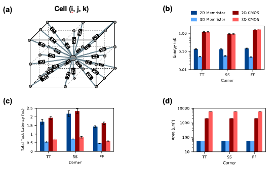
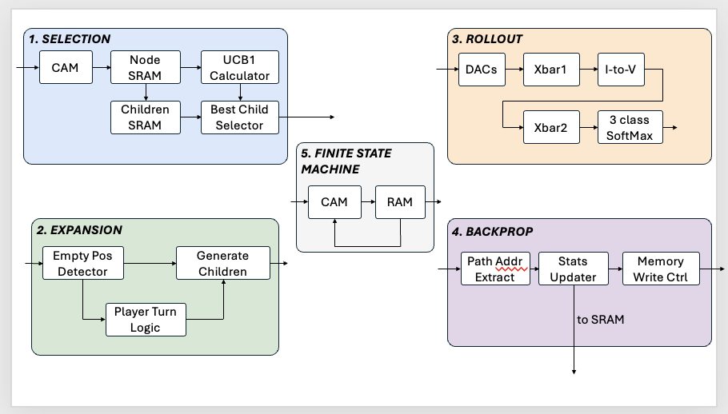

Research
My research asks a single question: how can memory do more than store data?
I build emerging-device circuits and associative-memory architectures that execute search, retrieval, and iterative reasoning where data already lives. The program connects three layers of the stack: physical memory substrates, circuits for parallel similarity, and systems that use those primitives for modern AI workloads.

01 / EMERGING DEVICES
Memristive Substrates and Circuits
Research question: Which device and circuit primitives let memory execute similarity, local dynamics, and feedback with minimal data movement?
Current evidence includes collaborative work on memristive cellular neural network hardware that combines a 65 nm CMOS network, multilevel nonvolatile memristor synapses, and a digital twin for image and partial differential equation processing.
Selected evidence: Memristive cellular neural networks, Nature Electronics (2026)

02 / ASSOCIATIVE MEMORY
Associative-Memory Circuits and Architectures
Research question: How can similarity search and attention become native memory operations instead of dense arithmetic followed by data movement?
CAMformer maps binary attention to a voltage-domain CAM and a sparse top-k pipeline. MonoSparse-CAM uses tree-model sparsity and matchline monotonicity to skip redundant CAM operations. Related work studies scalable NoC-partitioned arrays and synthesizes the design space across 37 CAM cells.
Selected work: CAMformer · MonoSparse-CAM · Hamming Attention Distillation · CAM circuits survey · NP-CAM

03 / SEARCH AND REASONING
Hardware for Inference and Reasoning
Research question: How can memory systems support irregular, multi-phase search and the feedback needed for test-time computation?
IMC-MCTS decomposes Monte Carlo tree search into five memory and logic primitives, then coordinates them as one accelerator. Complementary work maps neuro-symbolic policies to CAM lookup, connecting learned perception with efficient rule execution.
Selected work: IMC-MCTS · Efficient Neuro-Symbolic Policy